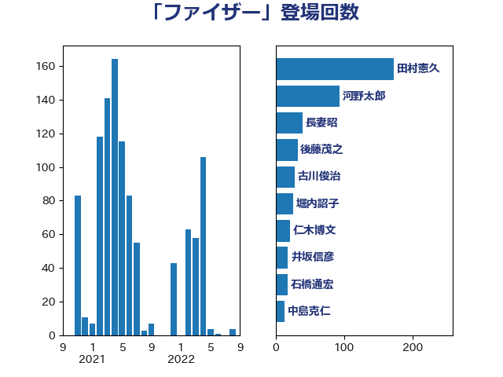

単語「ファイザー」

| 田村憲久 | 自由民主党 | 172 回 |
| 河野太郎 | 自由民主党 | 93 回 |
| 長妻昭 | 立憲民主党 | 39 回 |
| 後藤茂之 | 自由民主党 | 32 回 |
| 古川俊治 | 自由民主党 | 28 回 |
| 堀内詔子 | 自由民主党 | 26 回 |
| 仁木博文 | 無所属 | 21 回 |
| 井坂信彦 | 立憲民主党 | 18 回 |
| 石橋通宏 | 立憲民主党 | 18 回 |
| 中島克仁 | 立憲民主党 | 13 回 |
| 西村康稔 | 自由民主党 | 13 回 |
| 西村智奈美 | 立憲民主党 | 12 回 |
| 辻元清美 | 立憲民主党 | 12 回 |
| 宮本徹 | 日本共産党 | 11 回 |
| 河西宏一 | 公明党 | 11 回 |
| 菅義偉 | 自由民主党 | 11 回 |
| 打越さく良 | 立憲民主党 | 10 回 |
| 東徹 | 日本維新の会 | 10 回 |
| 谷田川元 | 立憲民主党 | 10 回 |
| 柴田巧 | 日本維新の会 | 9 回 |
| 福島みずほ | 社会民主党 | 9 回 |
| 大西健介 | 立憲民主党 | 8 回 |
| 小沼巧 | 立憲民主党 | 8 回 |
| 川田龍平 | 立憲民主党 | 8 回 |
| 梅村聡 | 日本維新の会 | 8 回 |
| 田島麻衣子 | 立憲民主党 | 7 回 |
| 篠原豪 | 立憲民主党 | 7 回 |
| 茂木敏充 | 自由民主党 | 7 回 |
| 丸川珠代 | 自由民主党 | 6 回 |
| 吉川元 | 立憲民主党 | 6 回 |
| 山本香苗 | 公明党 | 6 回 |
| 岡本三成 | 公明党 | 6 回 |
| 杉尾秀哉 | 立憲民主党 | 6 回 |
| 田村まみ | 国民民主党 | 6 回 |
| 吉田とも代 | 日本維新の会 | 5 回 |
| 塩田博昭 | 公明党 | 5 回 |
| 大串博志 | 立憲民主党 | 5 回 |
| 小西洋之 | 立憲民主党 | 5 回 |
| 後藤祐一 | 立憲民主党 | 5 回 |
| 福山哲郎 | 立憲民主党 | 5 回 |
| 伊佐進一 | 公明党 | 4 回 |
| 吉田統彦 | 立憲民主党 | 4 回 |
| 山井和則 | 立憲民主党 | 4 回 |
| 枝野幸男 | 立憲民主党 | 4 回 |
| 柚木道義 | 立憲民主党 | 4 回 |
| 江田憲司 | 立憲民主党 | 4 回 |
| 田中健 | 国民民主党 | 4 回 |
| 緑川貴士 | 立憲民主党 | 4 回 |
| 自見はなこ | 自由民主党 | 4 回 |
| 若松謙維 | 公明党 | 4 回 |
| 阿部知子 | 立憲民主党 | 4 回 |
| こやり隆史 | 自由民主党 | 3 回 |
| 三宅伸吾 | 自由民主党 | 3 回 |
| 三浦信祐 | 公明党 | 3 回 |
| 大島敦 | 立憲民主党 | 3 回 |
| 奥野総一郎 | 立憲民主党 | 3 回 |
| 矢倉克夫 | 公明党 | 3 回 |
| 石井章 | 日本維新の会 | 3 回 |
| 長谷川淳二 | 自由民主党 | 3 回 |
| 三谷英弘 | 自由民主党 | 2 回 |
| 国光あやの | 自由民主党 | 2 回 |
| 小川淳也 | 立憲民主党 | 2 回 |
| 山崎正恭 | 公明党 | 2 回 |
| 山際大志郎 | 自由民主党 | 2 回 |
| 杉本和巳 | 日本維新の会 | 2 回 |
| 松沢成文 | 日本維新の会 | 2 回 |
| 片山大介 | 日本維新の会 | 2 回 |
| 牧義夫 | 立憲民主党 | 2 回 |
| 玉木雄一郎 | 国民民主党 | 2 回 |
| 田嶋要 | 立憲民主党 | 2 回 |
| 田村智子 | 日本共産党 | 2 回 |
| 白石洋一 | 立憲民主党 | 2 回 |
| 石垣のりこ | 立憲民主党 | 2 回 |
| 羽生田俊 | 自由民主党 | 2 回 |
| 萩生田光一 | 自由民主党 | 2 回 |
| 野上浩太郎 | 自由民主党 | 2 回 |
| 高野光二郎 | 自由民主党 | 2 回 |
| 下条みつ | 立憲民主党 | 1 回 |
| 中川正春 | 立憲民主党 | 1 回 |
| 中谷一馬 | 立憲民主党 | 1 回 |
| 串田誠一 | 日本維新の会 | 1 回 |
| 井上貴博 | 自由民主党 | 1 回 |
| 井野俊郎 | 自由民主党 | 1 回 |
| 倉林明子 | 日本共産党 | 1 回 |
| 吉田久美子 | 公明党 | 1 回 |
| 吉田宣弘 | 公明党 | 1 回 |
| 吉田忠智 | 立憲民主党 | 1 回 |
| 大塚耕平 | 国民民主党 | 1 回 |
| 岸信夫 | 自由民主党 | 1 回 |
| 岸田文雄 | 自由民主党 | 1 回 |
| 岸真紀子 | 立憲民主党 | 1 回 |
| 島村大 | 自由民主党 | 1 回 |
| 川合孝典 | 国民民主党 | 1 回 |
| 本田顕子 | 自由民主党 | 1 回 |
| 柳本顕 | 自由民主党 | 1 回 |
| 森本真治 | 立憲民主党 | 1 回 |
| 橋本岳 | 自由民主党 | 1 回 |
| 櫻井充 | 自由民主党 | 1 回 |
| 武井俊輔 | 自由民主党 | 1 回 |
| 浜口誠 | 国民民主党 | 1 回 |
| 清水貴之 | 日本維新の会 | 1 回 |
| 渡辺周 | 立憲民主党 | 1 回 |
| 石井浩郎 | 自由民主党 | 1 回 |
| 福岡資麿 | 自由民主党 | 1 回 |
| 稲富修二 | 立憲民主党 | 1 回 |
| 篠原孝 | 立憲民主党 | 1 回 |
| 蓮舫 | 立憲民主党 | 1 回 |
| 谷公一 | 自由民主党 | 1 回 |
| 遠藤敬 | 日本維新の会 | 1 回 |
| 里見隆治 | 公明党 | 1 回 |
| 金子恭之 | 自由民主党 | 1 回 |
| 鈴木英敬 | 自由民主党 | 1 回 |
| 高木啓 | 自由民主党 | 1 回 |
| 高橋千鶴子 | 日本共産党 | 1 回 |